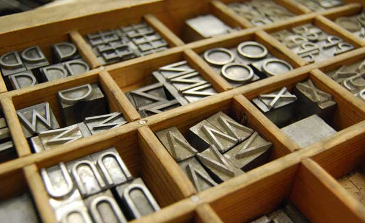

Diseño técnico o didáctico
El diseño técnico ya casi no se clasifica como una especialidad individual, pero no por ello es menos importante. Casi podría incluirla dentro de la señalética, pero finalmente la he dejado a parte, porque a pesar de compartir algunas estrategias, realmente tiene sus diferencias. Crea esquemas, proyectos, planos, mapas, organigramas, láminas, esquemas, juguetes, móviles, rompecabezas, memoramas, animaciones interactivas utilizando la forma… Su método estratégico es la presentación de fenómenos, procesos e ideas. utilizan Grafos, redes, texto, línea, color, tipos, texturas, puntos, estructuras, imágenes y formatos. funcion y efectos sociales Su función es la de educar por medio de sus creaciones que deben ser funcionales, legibles, asimilables, además de motivar, ser creativo y simple. Por tanto, los efectos sociales son el didactismo, transmisión de conocimientos y autodidactismo. trabajan en Estudios de diseño. programas Illustrator, photoshop, indesign.
Diseño tipográfico
 Esta es otra especialidad que está dando fuerte, a pesar de su antigüedad siempre está ahí. Es de las más bonitas y en ella se estudia, diseña y clasifica los tipos de letras y las familias de las letras con características comunes. ¿Has oído hablar del lettering y la caligrafía? Esta disciplina está siendo un arte gracias al auge de esta expresión gráfica mezclada con ilustración y sobre todo, creatividad. El diseño tipográfico trata de dar una personalidad única y estilo diferente al contexto que se le incluye, según sus características puede expresar modernismo, clasicismo…. elegante, desenfadado… En el diseño tipográfico se necesita conocimientos de interletraje (kerning), espaciado (tracking), interlineado… para una versión óptica de la gráfica de la palabra. Sus estrategias es la legibillidad, creatividad, estética, funcionalidad y unidad visual. utilizan Puntos, líneas, formas, estructuras, redes… funcion y efectos sociales Su función es comunicar por medio de imágenes, por tanto su efecto social es informativo. programas Illustrator, FontForge, Glyphs… (si la quieres exportar y vender como una fuente de verdad instalable True Type u Open Type). trabajan en Estudios de diseño, agencias de publicidad, editoriales y freelance.